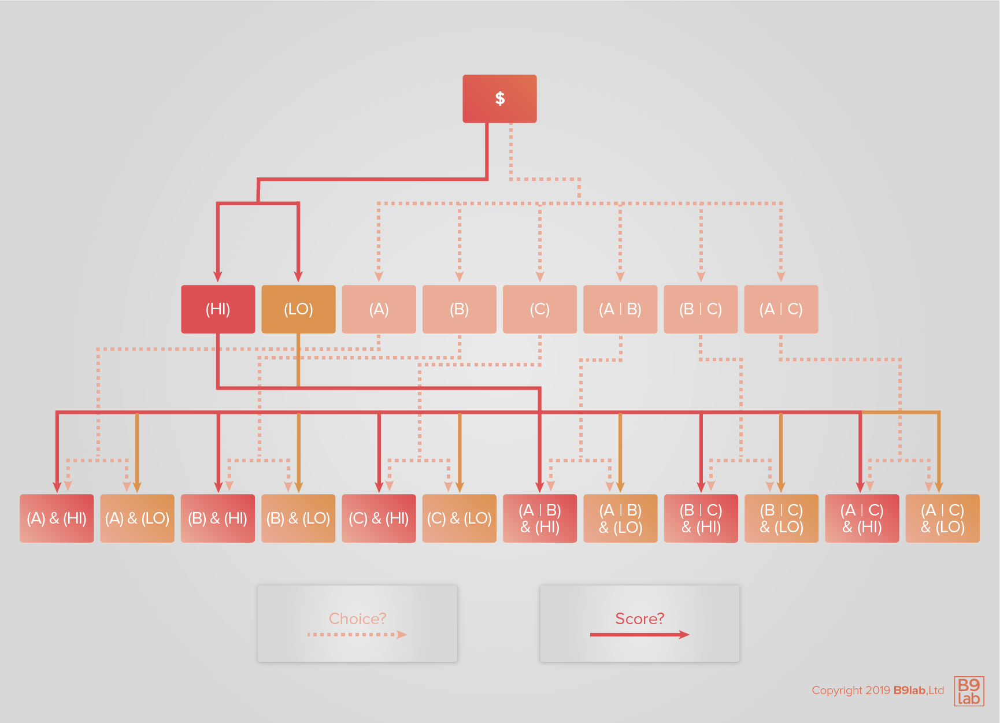
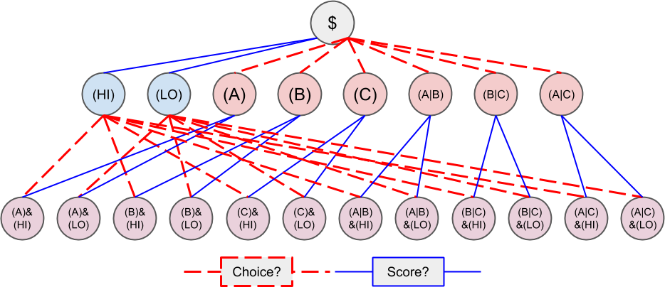

<!DOCTYPE html>
<html lang="en">
<head><meta name="generator" content="Hexo 3.9.0">
    <!-- hexo-inject:begin --><!-- hexo-inject:end --><!-- Document Settings -->
    <meta charset="utf-8">
    <meta http-equiv="X-UA-Compatible" content="IE=edge">

    <!-- Page Meta -->
    <title>Conditional Tokens - Contract Overview</title>
    

    <!-- Mobile Meta -->
    <meta name="HandheldFriendly" content="True">
    <meta name="viewport" content="width=device-width, initial-scale=1.0">

    <!-- Brand icon -->
    <link rel="icon" type="image/png" href="/conditional-tokens/img/favicon.png">
    <meta name="msapplication-TileColor" content="#009CB4">
    <meta name="theme-color" content="#009CB4">

    <meta property="og:site_name" content="Conditional Tokens">
    <meta property="og:type" content="website">
    <meta property="og:title" content="Gnosis - Contract Overview">
    
    <meta property="og:url" content="https://gnosis.github.io/conditional-tokens/conditional-tokens/contract.html">
    <meta property="og:image" content="https://gnosis.github.io/conditional-tokens/img/share.png">
    <meta property="article:publisher" content="https://www.facebook.com/gnosis">
    <meta name="twitter:card" content="summary_large_image">
    <meta name="twitter:title" content="Gnosis - Contract Overview">
    
    <meta name="twitter:url" content="https://gnosis.github.io/conditional-tokens/conditional-tokens/contract.html">
    <meta name="twitter:site" content="@gnosispm">

    <!-- Styles'n'Scripts -->
    <link rel="stylesheet" href="//cdnjs.cloudflare.com/ajax/libs/highlight.js/9.15.6/styles/monokai-sublime.min.css">
    <link rel="stylesheet" href="https://stackpath.bootstrapcdn.com/bootstrap/4.3.1/css/bootstrap.min.css" integrity="sha384-ggOyR0iXCbMQv3Xipma34MD+dH/1fQ784/j6cY/iJTQUOhcWr7x9JvoRxT2MZw1T" crossorigin="anonymous">
    <link href="https://fonts.googleapis.com/css?family=IBM+Plex+Mono:400,600|IBM+Plex+Sans:400,500,700" rel="stylesheet">
    <link rel="stylesheet" href="/css/main.css">
    <script src="https://code.jquery.com/jquery-3.3.1.min.js" crossorigin="anonymous"></script><!-- hexo-inject:begin --><!-- hexo-inject:end -->
</head></html>
<body class="template-page">

    <!-- hexo-inject:begin --><!-- hexo-inject:end --><div class="main-container">
        <header>
    <div class="col">
        <a href="/conditional-tokens/" class="logo">Conditional Tokens</a>
    </div>
    <nav>
        <ul>
            <li class="has-submenu ">
                <a href="/conditional-tokens/docs/">Docs <i class="arrow"></i></a>
                <div class="submenu text-right">
                    <div class="container">
                        <div class="row">
                            <div class="col-md-5 text-right">
                                <h4>Documentation</h4>
                                <p class="p-large">Everything you need to start <br>building better markets</p>
                                <a href="/conditional-tokens/docs/" class="link-arrow">Get Learning</a>
                            </div>
                            <div class="col-md-4 offset-md-1">
                                <ul>
                                    <li><a href="/conditional-tokens/docs/technical_documentation.html" class="link-arrow">Overview</a></li>
                                    <li><a href="/conditional-tokens/docs/eip-1155.html" class="link-arrow">EIP-1155</a></li>
                                    <li><a href="/conditional-tokens/conditional-tokens/" class="link-arrow">Conditional Tokens</a></li>
                                    <li><a href="/conditional-tokens/conditional-tokens/get-started.html" class="link-arrow">Get Started</a></li>
                                    <li><a href="/conditional-tokens/tutorials/" class="link-arrow">Tutorials</a></li>
                                    <li><a href="/conditional-tokens/research/" class="link-arrow">Research</a></li>
                                </ul>
                            </div>
                        </div>
                    </div>
                </div>
            </li>
            <li><a href="https://blog.gnosis.pm">Blog</a></li>
        </ul>
    </nav>
    <a href="#" class="mobile-nav-trigger">
        <svg width="22" height="10" viewBox="0 0 22 10" fill="none" xmlns="http://www.w3.org/2000/svg"> <rect width="22" height="2" rx="0.5" fill="#001428"/> <rect y="7" width="22" height="2" rx="0.5" fill="#001428"/> </svg>
    </a>
    <div class="mobile-nav">
        <div class="mobile-nav-header">
            <a href="/conditional-tokens/" class="logo"></a>
            <a href="#" class="mobile-nav-trigger-close">
                <svg width="18" height="17" viewBox="0 0 18 17" fill="none" xmlns="http://www.w3.org/2000/svg"> <rect x="1.5752" y="0.368273" width="22" height="2" rx="0.5" transform="rotate(45 1.5752 0.368273)" fill="#001428"/> <rect x="0.868164" y="15.9246" width="22" height="2" rx="0.5" transform="rotate(-45 0.868164 15.9246)" fill="#001428"/> </svg>
            </a>
        </div>
    </div>
    <div class="backdrop"></div>
</header>
        <!-- The main content area -->
<main id="main" role="main">

	<section class="single-docs-content">
		<div class="container-fluid">
			<div class="row">
				<div class="col-md-3 col-xl-2">
					<aside class="sidebar" role="navigation">
  <a href="#" class="btn sidebar-mobile-trigger">Docs categories</a>
  <div class="sidebar-container">
    <div class="mobile-sidebar-header">
      <a href="/" class="logo"></a>
      <a href="#" class="mobile-sidebar-trigger-close">
        <svg width="18" height="17" viewBox="0 0 18 17" fill="none" xmlns="http://www.w3.org/2000/svg"> <rect x="1.5752" y="0.368273" width="22" height="1" rx="0.5" transform="rotate(45 1.5752 0.368273)" fill="#090909"></rect> <rect x="0.868164" y="15.9246" width="22" height="1" rx="0.5" transform="rotate(-45 0.868164 15.9246)" fill="#090909"></rect> </svg>
      </a>
    </div>
    <ul class="sidebar-menu"><li class=""><a href="/conditional-tokens/docs/technical_documentation.html">Docs</a><ul class="sidebar-submenu"><li class=""><a href="/conditional-tokens/docs/technical_documentation.html">Overview</a></li><li class=""><a href="/conditional-tokens/docs/erc-1155.html">ERC-1155</a></li></ul><li class="active"><a href="/conditional-tokens/conditional-tokens/">Conditional Tokens</a><ul class="sidebar-submenu"><li class="active"><a href="/conditional-tokens/conditional-tokens/contract.html">Contract Overview</a></li><li class=""><a href="/conditional-tokens/conditional-tokens/split-merge-redeem.html">Split, Merge, Redeem</a></li><li class=""><a href="/conditional-tokens/conditional-tokens/get-started.html">Get Started</a></li></ul><li class=""><a href="/conditional-tokens/tutorials/">Tutorials</a><ul class="sidebar-submenu"><li class=""><a href="/conditional-tokens/tutorials/index.html">Tutorials</a></li></ul><li class=""><a href="/conditional-tokens/research/">Research</a><ul class="sidebar-submenu"><li class=""><a href="/conditional-tokens/research/index.html">Research</a></li></ul></ul>
  </div>
  <div class="backdrop"></div>
</aside>
				</div>
				<div class="col-md-9 col-xl-8">
					<div class="row">
						<div class="col-md-12">
							<div class="editor-content">
								<h1 id="Conditional-Token-Overview" class="article-heading"><a href="#Conditional-Token-Overview" class="headerlink" title="Conditional Token Overview"></a>Conditional Token Overview<a class="article-anchor" href="#Conditional-Token-Overview" aria-hidden="true"></a></h1><p>In order to understand <a href="https://github.com/gnosis/conditional-tokens-contracts/blob/master/contracts/ConditionalTokens.sol" target="_blank" rel="noopener">conditional tokens</a>, you need to grasp how they are used to construct <em>positions</em>. A “position” is a financial term which can be described as a buy or sell action that reflects someone’s belief in an asset’s, or multiple assets’, future price.</p>
<h2 id="Positions" class="article-heading"><a href="#Positions" class="headerlink" title="Positions"></a>Positions<a class="article-anchor" href="#Positions" aria-hidden="true"></a></h2><p>Positions consist of collateral (ERC-20 tokens) and one or more <em>conditions</em> with <em>outcome collections</em>. Positions become valuable precisely when all of its outcome conditions are reported as true.</p>
<p>We explain conditions and outcome collections below, but shown here as some complex conditions to illustrate the power of conditional tokens and positions. Consider a dollar (DAI) collateralized position with two conditions:</p>
<ol>
<li>Condition 1, with outcome collection <code>[A, B, C]</code></li>
<li>Condition 2, with outcome collection <code>[HI, LO]</code></li>
</ol>
<p>Further, consider Boolean <code>OR</code> possibilities that might make interesting positions.</p>
<ol>
<li>A or B, B or C, A or C</li>
</ol>
<p>We can add those possibilities to the outcome collection for Condition 1:</p>
<ol>
<li>Condition 1, with outcome collection <code>[A, B, C, A|B, B|C, A|C]</code></li>
</ol>
<p>We can commit collateral to either (or both!) of these conditions and create conditional tokens for each outcome. We denote collateralized positions as <code>$:(A|B)</code>, meaning “collateral” (can be DAI, US Dollar equivalents, or another ERC-20 token) for the “A or B” outcome. Similarly, <code>$:(LO)</code> means collateral and the “LO” outcome. Most interestingly, we can merge these positions into a deeper position like <code>$:(A|B)&amp;(LO)</code>. This notation shows collateral staked on A or B for the first condition, and LO for the second condition. Moving between positions and trading on open markets has never been easier.</p>
<p>Here is a graph of all positions that are contingent on the outcome of these two conditions:</p>
<p></p>
<p>Focus on this <strong>critical point</strong>: a position is now a clearly defined mathematical construct on a public and decentralized network. Anybody can create a condition, and anybody can take a position on that condition. This construct allows as many markets to exist as there are tokens, and for each of those markets to benefit from a global pool of liquidity.</p>
<h2 id="Conditions" class="article-heading"><a href="#Conditions" class="headerlink" title="Conditions"></a>Conditions<a class="article-anchor" href="#Conditions" aria-hidden="true"></a></h2><p>Let’s take a step back. Before conditional tokens can exist, a condition must be prepared. Preparing a condition means that you must define several specifications of a condition, including how a specific oracle reports the condition’s outcome. The following function is used to prepare a condition, which will be decided when the oracle submits what we call a “payout vector”:</p>
<pre><code class="solidity">function prepareCondition(address oracle, bytes32 questionId, uint payoutDenominator, uint outcomeSlotCount) external
</code></pre>
<ol>
<li><em>oracle</em> – The account assigned to report the result for the prepared condition.</li>
<li><em>questionId</em> – An identifier for the question to be answered by the oracle.</li>
<li><em>payoutDenominator</em> – What the payouts reported by the oracle must eventually sum up to.</li>
<li><em>outcomeSlotCount</em> – The number of outcome slots which should be used for this condition. Must not exceed 256.</li>
</ol>
<p>You, the consumer of the contract, have to interpret the question ID correctly. For example, it could be an IPFS hash which can be used to retrieve a document specifying the question more fully. Allowing clients to choose their own mechanisms for generating questionIds and choosing orcales allows for more flexibility in the long run.</p>
<h2 id="Simple-Example" class="article-heading"><a href="#Simple-Example" class="headerlink" title="Simple Example"></a>Simple Example<a class="article-anchor" href="#Simple-Example" aria-hidden="true"></a></h2><p>Say we have a question where only one out of multiple choices may be chosen:</p>
<blockquote>
<p>Who out of the following will be chosen? [A, B, C, D, E]</p>
</blockquote>
<p>Through some commonly agreed upon mechanism, the detailed description for this question becomes a 32 byte questionId: <code>0xabcabcabcabcabcabcabcabcabcabcabcabcabcabcabcabcabcabcabcabc1234</code></p>
<p>Let’s also suppose we trust the oracle with address <code>0x1337aBcdef1337abCdEf1337ABcDeF1337AbcDeF</code> to deliver the answer for this question, and that the payoutDenominator should sum to 1 for simplicty.</p>
<p>To prepare this condition, the following code gets run:</p>
<pre><code class="js">await conditionalTokens.prepareCondition(
    &#39;0x1337aBcdef1337abCdEf1337ABcDeF1337AbcDeF&#39;,
    &#39;0xabcabcabcabcabcabcabcabcabcabcabcabcabcabcabcabcabcabcabcabc1234&#39;,
    1,
    5
)
</code></pre>
<p>Later, if the oracle makes a report that the payout vector for the condition is <code>[0, 1, 0, 0, 0]</code>, it is stating that B was chosen, and the outcome slot associated with B would receive all of the payout.</p>
<h2 id="Outcome-Collections" class="article-heading"><a href="#Outcome-Collections" class="headerlink" title="Outcome Collections"></a>Outcome Collections<a class="article-anchor" href="#Outcome-Collections" aria-hidden="true"></a></h2><p>An outcome collection is defined as a <strong>nonempty proper subset of a condition’s outcome slots which represents the sum total of all the contained slots payout values</strong>. Outcome collections are represented by an index set. An index set is a uint whose bits identify whether the nth outcome is present in the collection, starting from the lower weight bits. In the example above, the five trivial outcomes represented in binary are:</p>
<ol>
<li>(A): 0b00001</li>
<li>(B): 0b00010</li>
<li>(C): 0b00100</li>
<li>(D): 0b01000</li>
<li>(E): 0b10000</li>
</ol>
<p>We are not limited to trivial collections, we can compose them:</p>
<ol>
<li>(A|B): 0b00011</li>
<li>(A|C): 0b00101</li>
<li>(A|E): 0b10001</li>
<li>(C|E): 0b10100</li>
<li>(A|B|D): 0b01011</li>
<li>(A|B|C|D|E): 0b11111</li>
</ol>
<p>This last one is called the <code>fullIndexSet</code>. It is calculated by bit-shifting, to make a number with as many 1s as there are outcomes. But why bother with an index set at all? First off, it allows us to enumerate all possible combinations of outcomes:</p>
<ol>
<li>0b0 represents no outcome</li>
<li>0b11…11 represents all outcomes</li>
<li>Any other combination is a number strictly between 0b0 and 0b11…11 in a one-to-one relationship.</li>
</ol>
<p>Further, it is useful because of the bitwise operations it offers. For instance, if you want to merge the collections <code>(A|D)</code> and <code>(D|E)</code>, you use OR, so in this case <code>0b01001 OR 0b11000 -&gt; 0b11001</code>. We recognise the new index set as <code>(A|D|E)</code>, exactly what we are looking for. We can also check the intersection between index sets. For example, if we have <code>(B|E)</code> and <code>(B|C|D)</code>, we can discover if they intersect in O(1) using AND. In this case <code>0b10010 AND 0b01110 -&gt; 0b00010</code>. The result represents the <code>(B)</code> outcome, which is where the collections intersect. It is &gt; 0, so they intersect. The AND of two sets is == 0 if they do not intersect.</p>
<p>This logic allows us to <em>partition outcome collections</em>. A partition is outcome collections which do not intersect. A trivial partition is <code>[(A), (B), (C), (D), (E)]</code>. <code>[(A|C), (B|D), (E)]</code> is another. We could easily check for intersections in O(m^2), where m is the number of collections, but we do it in considerably more efficient O(m) fashion. The Gnosis prediction market contract tracks the outcomes that have not been mentioned yet in <code>freeIndexSet</code>. It starts as “all outcomes have not been mentioned yet”. Then, on every collection, it makes sure that this collection is fully inside the still available outcomes, then flips down the bits of the collection with the use of XOR. Bonus feature: when <code>freeIndexSet == 0</code>, meaning there remain no unmentioned outcomes, your list of index sets, referred to as your <strong>partition</strong>, is exhaustive.</p>
<h2 id="Scalar-Example" class="article-heading"><a href="#Scalar-Example" class="headerlink" title="Scalar Example"></a>Scalar Example<a class="article-anchor" href="#Scalar-Example" aria-hidden="true"></a></h2><p>Let’s ask a question whose answer may lie in a range:</p>
<blockquote>
<p>What will the score be? [0, 1000]</p>
</blockquote>
<p>Assume the questionId is <code>0x777def777def777def777def777def777def777def777def777def777def7890</code>, and that we trust the oracle <code>0xCafEBAbECAFEbAbEcaFEbabECAfebAbEcAFEBaBe</code> to deliver the results for this question.</p>
<p>To prepare this condition, the following code gets run:</p>
<pre><code class="js">await conditionalTokens.prepareCondition(
    &#39;0xCafEBAbECAFEbAbEcaFEbabECAfebAbEcAFEBaBe&#39;,
    &#39;0x777def777def777def777def777def777def777def777def777def777def7890&#39;,
    1,
    2
)
</code></pre>
<p>This results in a collectionId of <code>0x52ff54f0f5616e34a2d4f56fb68ab4cc636bf0d92111de74d1ec99040a8da118</code>.</p>
<p>We prepare the condition with two slots: one which represents the low end of the range (0) and another which represents the high end (1000). The payout vector should indicate how close the answer was to these endpoints. For example, if the oracle makes a report that the payout vector is <code>[0.9, 0.1]</code>, then this means the score was 100 (the slot corresponding to the low end is worth nine times what the slot corresponding with the high end is worth, meaning the score should be nine times closer to 0 than it is close to 1000). Likewise, if the payout vector is reported to be <code>[0, 1]</code>, then the oracle is saying that the score was <em>at least</em> 1000.</p>
<p>Now, let’s denote the enpoints 0 and 1000 as <strong>LO</strong> and <strong>HI</strong> respectively. Using the same method as above, we can find the collectionId for <code>(LO)</code> to be <code>0xd79c1d3f71f6c9d998353ba2a848e596f0c6c1a9f6fa633f2c9ec65aaa097cdc</code>.</p>
<p>Finally, we can find the combined collectionId for the two different conditions from both our questions in an expression like <code>(A|B)&amp;(LO)</code>:</p>
<pre><code class="js">&#39;0x&#39; + BigInt.asUintN(256,
    0x52ff54f0f5616e34a2d4f56fb68ab4cc636bf0d92111de74d1ec99040a8da118n +
    0xd79c1d3f71f6c9d998353ba2a848e596f0c6c1a9f6fa633f2c9ec65aaa097cdcn
).toString(16)
</code></pre>
<p>This yields the value <code>0x2a9b72306758380e3b0a31125ed39a635432b283180c41b3fe8b5f5eb4971df4</code>.</p>
<h2 id="Compounding-Conditions" class="article-heading"><a href="#Compounding-Conditions" class="headerlink" title="Compounding Conditions"></a>Compounding Conditions<a class="article-anchor" href="#Compounding-Conditions" aria-hidden="true"></a></h2><p>Let’s add some collateral into the example now. We’ll use DAI to collateralize our positions, and pretend the contract exists at the address <code>0xD011ad011ad011AD011ad011Ad011Ad011Ad011A</code>. We will denote this token with <code>$</code>. We can calculate the positionId for the position <code>$:(A|B)</code> via:</p>
<pre><code class="js">web3.utils.soliditySha3({
    t: &#39;address&#39;,
    v: &#39;0xD011ad011ad011AD011ad011Ad011Ad011Ad011A&#39;
}, {
    t: &#39;bytes32&#39;,
    v: &#39;0x52ff54f0f5616e34a2d4f56fb68ab4cc636bf0d92111de74d1ec99040a8da118&#39;
})
</code></pre>
<p>Which returns <code>0x6147e75d1048cea497aeee64d1a4777e286764ded497e545e88efc165c9fc4f0</code>.</p>
<p>Similarly, <code>$:(LO)</code> is <code>0xfdad82d898904026ae6c01a5800c0a8ee9ada7e7862f9bb6428b6f81e06f53bb</code>, and <code>$:(A|B)&amp;(LO)</code> has an postionId of <code>0xcc77e750b61d29e158aa3193faa3673b2686ba9f6a16f51b5cdbea2a4f694be0</code>.</p>
<p>The important point to grasp here is that DAI may be staked in the contract as collateral in order to take a position in either of our two examples, or indeed, both. In other words, there are <em>shallow</em> positions like <code>$:(LO)</code>, or <em>deep</em> positions like <code>$:(A|B)&amp;(LO)</code>. Stake in shallow positions can only be obtained through locking collateral directly in the contract; stake in deeper positions may be accessed by burning stake in shallower positions.</p>
<p>It’s easiest to see this at work if we draw out the same graph as earlier, hopefully now with greater understanding:</p>
<p></p>
<p>The resulting nested and interconnected positions are what we are talking about when we say that every one of the millions of future tokens ought to have a market associated with it that can genuinely survive due to its access to a global liquidity pool.</p>

							</div>
							<div class="docs-footer">
								Last update: 2019-11-07
								
							</div>
						</div>
					</div>
				</div>
				<div class="col-lg-12 col-xl-2 d-none d-xl-block">
					<div class="right-sub-navigation">
						<b>On this page</b>
						<ul></ul>
					</div>
				</div>
			</div>
		</div>
	</section>

</main>
        <footer>
    <div class="get-started">
        <div class="container">
            <div class="row">
                <div class="col-lg-6">
                    <h3><a href="https://github.com/gnosis/GECO" target="_blank" rel="noopener noreferrer">Get a Grant and Start Building</a></h3>
                </div>
                <div class="col-lg-6 text-right">
                    <div class="inline">
                        <a href="/conditional-tokens/docs/" class="btn btn-white">Docs</a>
                    </div>
                </div>
                <div class="col-lg-12 text-right">
                    <div class="inline">
                        <a href="https:gnosis.io" class="btn btn-white gnosis-btn">Gnosis</a>
                    </div>
                </div>
            </div>
            <div class="row">
                <div class="col-lg-6">
                    <a href="https://github.com/gnosis/conditional-tokens-contracts" target="_blank" rel="noopener noreferrer">
                        <div class="footer-circle footer-1"></div>
                    </a>
                    <a href="http://t.me/gnosisgeneral" target="_blank" rel="noopener noreferrer">
                        <div class="footer-circle footer-2"></div>
                    </a>
                    <a href="https://chat.gnosis.io" target="_blank" rel="noopener noreferrer">
                        <div class="footer-circle footer-3"></div>
                    </a>
                    <a href="https://blog.gnosis.pm/tagged/prediction-markets" target="_blank" rel="noopener noreferrer">
                        <div class="footer-circle footer-4"></div>
                    </a>
                </div>
            </div>
        </div>
    </div>
</footer>

        
    </div>

    <!-- 3rd party scripts -->
    <script src="//cdn.jsdelivr.net/bluebird/3.5.0/bluebird.min.js"></script>
    <script src="https://cdnjs.cloudflare.com/ajax/libs/fetch/2.0.3/fetch.js"></script>
    <script src="https://cdnjs.cloudflare.com/ajax/libs/popper.js/1.14.7/umd/popper.min.js" integrity="sha384-UO2eT0CpHqdSJQ6hJty5KVphtPhzWj9WO1clHTMGa3JDZwrnQq4sF86dIHNDz0W1" crossorigin="anonymous"></script>
    <script src="https://stackpath.bootstrapcdn.com/bootstrap/4.3.1/js/bootstrap.min.js" integrity="sha384-JjSmVgyd0p3pXB1rRibZUAYoIIy6OrQ6VrjIEaFf/nJGzIxFDsf4x0xIM+B07jRM" crossorigin="anonymous"></script>
    <script src="//cdn.jsdelivr.net/gh/highlightjs/cdn-release@9.15.6/build/highlight.min.js"></script>
    <script src="https://cdn.jsdelivr.net/npm/js-cookie@2/src/js.cookie.min.js"></script>
    <script src="https://cdnjs.cloudflare.com/ajax/libs/sticky-kit/1.1.3/sticky-kit.min.js"></script>
    <script src="https://cdnjs.cloudflare.com/ajax/libs/masonry/4.2.2/masonry.pkgd.min.js"></script>
    <script src="https://unpkg.com/imagesloaded@4/imagesloaded.pkgd.min.js"></script>
    <script type="text/javascript" src="/conditional-tokens/js/main.js"></script><!-- hexo-inject:begin --><!-- Begin: Injected MathJax -->
<script type="text/x-mathjax-config">
  MathJax.Hub.Config("");
</script>

<script type="text/x-mathjax-config">
  MathJax.Hub.Queue(function() {
    var all = MathJax.Hub.getAllJax(), i;
    for(i=0; i < all.length; i += 1) {
      all[i].SourceElement().parentNode.className += ' has-jax';
    }
  });
</script>

<script type="text/javascript" src="">
</script>
<!-- End: Injected MathJax -->
<!-- hexo-inject:end -->
</body>
</html>
